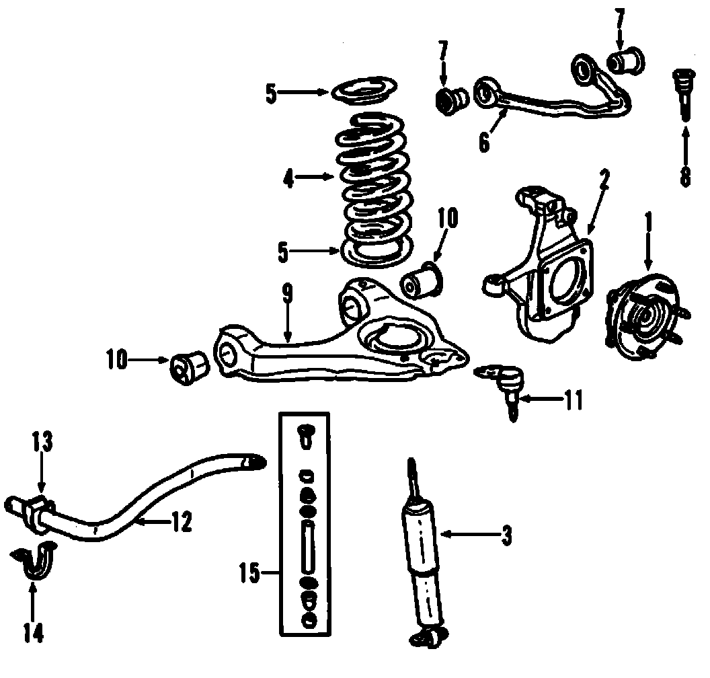
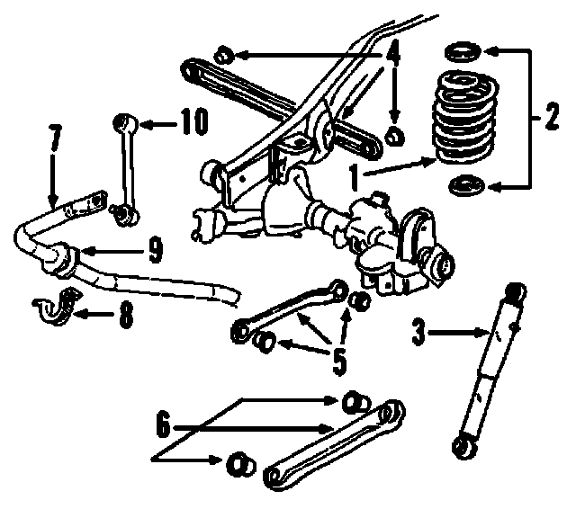

Operation CHARM
: Car repair manuals for everyone.
Home
>>
Cadillac
>>
2007
>>
Escalade ESV AWD V8-6.2L
>>
Parts and Labor
>>
Steering and Suspension
>>
Suspension
>>
Images
Images
Front Suspension, Coil Spring Type:

Rear Suspension, Coil Spring Type:
